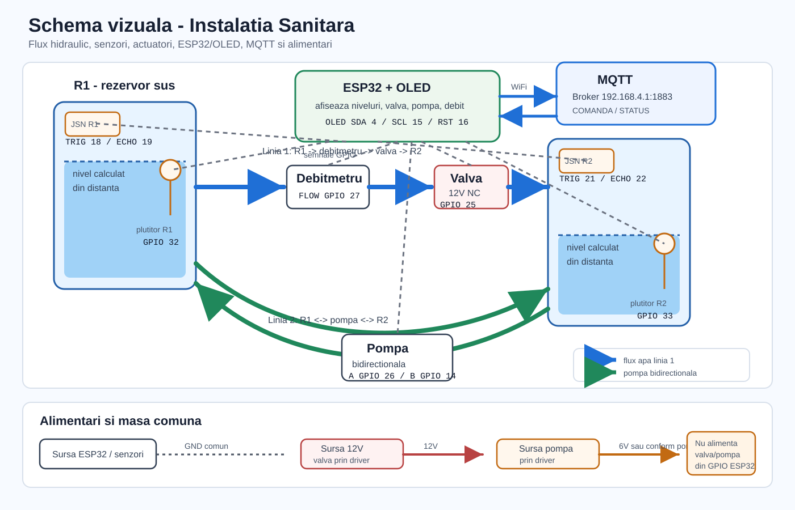

Diagrama prezinta cele doua rezervoare, linia cu debitmetru si valva, linia cu pompa bidirectionala, senzorii de nivel, semnalele ESP32, MQTT si alimentarea comuna.
Resurse asociate: prezentare proiect | schema hardware | schema MQTT | instructiuni complete
